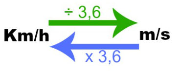

Velocidade Média
A velocidade de um corpo é dada pela relação entre o deslocamento de um corpo em determinado tempo. Pode ser considerada a grandeza que mede o quão rápido um corpo se desloca. A análise da velocidade se divide em dois principais tópicos: velocidade média e velocidade instantânea. É considerada uma grandeza vetorial, ou seja, tem um módulo (valor numérico), uma direção (Ex.: vertical, horizontal,...) e um sentido (Ex.: para frente, para cima, ...). Porém, para problemas elementares, onde há deslocamento apenas em uma direção, o chamado movimento unidimensional, convém tratá-la como uma grandeza escalar (com apenas valor numérico).
Representamos de forma matemática a fórmula da velocidade média: Vm = S / t
Vm = Velocidade média (km/h ou m/s).
S = Distância percorrida (km ou m).
t = Tempo percorrido (h ou s).
No Sistema Internacional de Unidades (SI) a velocidade é dada em metros por segundo (m/s). Contudo, outra maneira de medir a velocidade é em quilômetros por hora (km/h), como notamos nas velocidades marcadas pelos carros e nas placas de trânsito. Nesse sentido, é importante destacar que para a converter m/s em km/h multiplica-se por 3,6. Por outro lado, para transformar km/h em m/s divide-se o valor por 3,6, visto que 1 km são 1000 metros e 1 hora correspondem a 3600 s.

Fontes: Só Física Toda matéria
A velocidade média é: